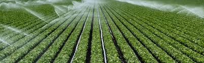
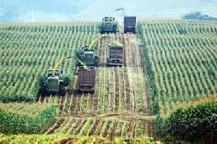
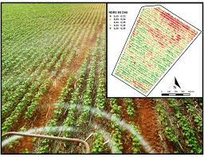

Discover how technology is transforming agriculture for a sustainable and more productive future.
One of the most important jobs of a farmer is to make sure that he uses the water he has judiciously. A new set of smartphone apps called SmartIrrigation are aimed at helping cotton, strawberry and citrus farmers manage the water they use on their crops by taking into account local weather conditions.
Smart irrigation systems can optimize water levels based on things such as soil moisture and weather predictions. This is done with wireless moisture sensors that communicate with the smart irrigation controls.

Modern farm machinery has upgraded the agricultural industry for the best. Some of the essential and most used machinery are Combine Harvester, Rotavator, Tractor Trailer, Power Harrow, and disc harrow.
By utilizing mechanical power in agriculture leads to reduced animal power so that rearing of animals is not required and utilization of fodder area can be used to grow crops for producing food for human consumption.

Sensing technology applied to agriculture is based on the typical light reflectance curve for vegetation. N-Sensor measures light reflectance at specific wavebands related to the crop's chlorophyll content and biomass.
Optimum application rates are derived from the N-uptake data and sent to the controller of the variable rate spreader or sprayer, which will adjust fertiliser rates accordingly.
